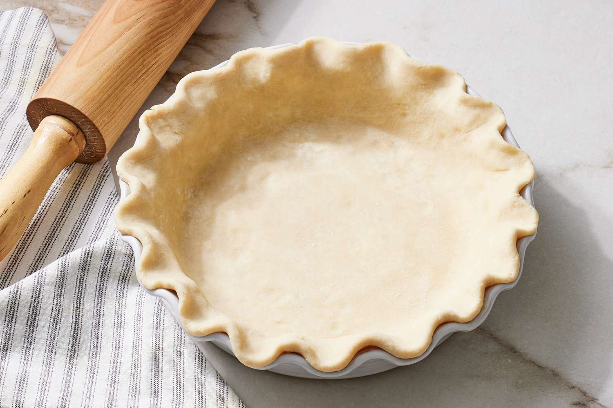

Pie Dough

Ingredients
- 5 1⁄4 cups flour (752 g)
- 1 TBS kosher salt
- 1 1⁄2 sticks (6 ounces) cold unsalted butter, cut into small pieces
- 1 3⁄4 cups (11 ounces) solid vegetable shortening, chilled (282 g)
- 1 cup ice water
Makes 4 crusts. Each crust is 350 g.
To Make the Dough by Hand
Mix the flour and salt together in a large bowl. Add the butter and, using a pastry blender, cut it into the flour until the mixture looks like coarse crumbs. Be patient- this takes a while.
Break up the shortening and add it in bits to the bowl. Still working with the pastry blender, cut in the shortening until the mixture has small clumps and curds.
Switch to a wooden spoon and add the ice water, stirring to incorporate it. Turn the dough out onto a work surface and fold it over on itself a few times- don't get carried away. The dough will be soft, but it will firm sufficiently in the refrigerator.
To Make the Dough in a Mixer Fitted With a Paddle Attachment
Put the flour and salt into the bowl and stir to mix.
Add the butter and mix on low until it is cut into the dry ingredients and the mixture looks coarse and crumbly.
Add the shortening in small bits and continue to mix on low. When the mixture is clumpy and curdy and holds together when a small bit is pressed between your fingers, add the water and mix only until it is incorporated.
Turn the dough out onto a work surface and fold it over on itself two or three times, just to finish the mixing and to gether it together.